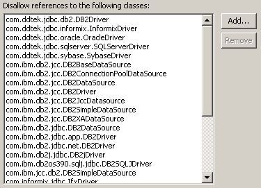

Audit - Rules - JDBC/SQL UsageDescriptionThis group contains audit rules that check for problems related to the use of JDBC and SQL interfaces within the code. |
| Rules: |
Summary
Database queries should not be constructed from user input.
Description
This audit rule looks for places where a query is being performed that was constructed from data that might have come from user input.
Specifically, this audit rule violates the usage of the methods "execute", "executeQuery", or "executeUpdate" as defined in java.sql.Statement.
Security Implications
Malicious users could input text that could change the meaning of the SQL query to expose data, gain administrative access or drop tables.
Example
The invocation of the executeQuery method below would be flagged because the argument is constructed from values that might include user input.
String query =
"SELECT userid, name FROM user_data WHERE accountnum = '"
+ req.getParameter("ACCT_NUM")
+ "'";
...
statement.executeQuery(query);
It should be replaced by something like the following:
PreparedStatement statement = connection.prepareStatement
("SELECT userid, name FROM user_data WHERE accountnum = ?");
statement.setString(1, req.getParameter("ACCT_NUM");
ResultSet results = statement.executeQuery();
Summary
A database connection shared via a static field can be accessed simultaneously by multiple threads. This is against the transaction-based nature of a Connection resource.
DescriptionJDBC Connection is a transactional resource object. Such objects can only be associated with one transaction at a time.
Security Implications
Storing connections in static fields would make it easy to erroneously share them between threads in different transactions, thus creating a potentially dangerous situation for the data.
Example
The following code would be flagged as a violation because it shares a JDBC Connection via static field:
public class DataRequest {
private final static Connection connection;
...
}
Summary
The methods DriverManager#getConnection() and Driver#connect() are the low-level ways of getting a connection to a database. DataSource should be used instead.
DescriptionDataSource implementations provided by the majority of application servers provide advanced features such as connection pooling. These features can be accessed automatically when using the class DataSource.
Security Implications
Using direct connection retrieval can potentially create performance issues that can be used by an attacker to perform a Denial of Service attack.
Example
The following code would be flagged as a violation because it directly retrieves the connection:
public Connection getConnection() {
return DriverManager.getConnection(dbUrl);
}
Summary
Do not reference database driver loading classes.
Description
This audit rule checks for classes that are used to connect to databases that should not be used within the code.
Example
If the class java.sql.DriverManager is on the list of disallowed classes, then the following method invocation would be flagged as a violation:
DriverManager.getDrivers();

Summary
Using method-local DataSource could lead to a concurrent access to the database.
Description
This rule looks for the creation of DataSource objects in methods.
Security Implications
Using method-local DataSource objects could lead to an unprotected concurrent access to the database, which could result in an unexpected state of either the application or its data.
Example
The following method creates a DataSource object and would thus be marked as violation:
public void local() {
....
DataSource ds = null;
....
}
Summary
SQL queries might be receiving data from the user or other unsafe sources.
Description
SQL Injection occurs when the user is able to enter data directly into SQL queries.
To detect violations, this audit rule searches the code for SQL queries such as java.sql.Statement.execute(..) and traces where the query data could have come from. In cases where the source of the query is user input, such as data from a servlet request, javax.servlet.ServletRequest.getParameter(java.lang.String), or from a SWT Text widget, org.eclipse.swt.widgets.Text.getText(), a violation is created.
These two sets of methods, the locations where tainted user data can come from and the methods used to query the database, are editable by the user.If methods are missing that are in a common package (such as java.lang.*), please let CodePro support know.
Also note, the SQL query methods for Hibernate and Persistence frameworks have been added.
Security Implications
Successful SQL Injection attacks can potentially drop tables, update the database in a malicious manner and even gain administrator access.
Example
The invocation of the method executeQuery(..) would be flagged as a violation since it uses the first name information passed from a servlet request:
ServletRequest servletRequest;
Connection connection;
Statement statement;
servletRequest = ...;
connection = DriverManager.getConnection("www.example.com", "myUserName", "myPassword");
statement = connection.createStatement();
String firstName = req.getParameter("firstName");
String query = "SELECT * FROM user_data WHERE firstName = '" + firstName + "'";
statement.executeQuery(query);